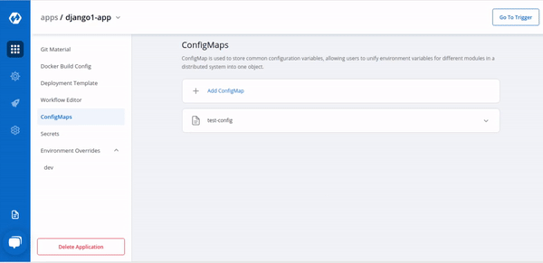

Config Maps
The ConfigMap API resource holds key-value pairs of configuration data that can be consumed in pods or used to store configuration data for system components such as controllers. ConfigMap is similar to Secrets, but designed to more conveniently support working with strings that do not contain sensitive information.
Click on Add ConfigMap to add a config map to your application.

Configure the ConfigMap
You can configure the configmap in two way-
(a) Using data type Kubernetes ConfigMap
(b) Using data type Kubernetes External ConfigMap
(A) Using Kubernetes ConfigMap
| Key | Description |
|---|---|
Data Type(Kubernetes ConfigMap) |
Select data type from Kubernetes ConfigMap and Kubernetes External ConfigMap |
Name |
Provide a name to this ConfigMap. |
Use configmap as Environment Variable |
Select this option if you want to inject Environment Variables in pods using ConfigMap. |
Use configmap as Data Volume |
Select this option, if you want to configure any Data Volume that is accessible to Containers running in a pod and provide a Volume mount path. |
Key-Value |
Provide the actual key-value configuration data here. Key and corresponding value to the provided key. |
1. Data Type
Select the Data Type as Kubernetes ConfigMap, if you wish to use the ConfigMap created by Devtron. You can select Kubernetes External ConfigMap if you have created a ConfigMap using the Kubectl command.
By default, the data type is selected to Kubernetes ConfigMap.
2. Name
Provide a name to your configmap.
3. Use ConfigMap as
Here we are providing two options, one can select any of them as per the requirement
-Environment Variable as part of your configMap or you want to add Data Volume to your container using Config Map.
- Environment Variable
Select this option if you want to add Environment Variables as part of configMap. You can provide Environment Variable in key-value pairs, which can be seen and accessed inside a pod.
- Data Volume
Select this option if you want to add Data Volume to your container using Config Map.
Key-value pairs that you provide here, are provided as a file to the mount path. Your application will read this file as it reads the file.
4. Data
In the Data section, you provide your configmap in key-value pairs. You can provide one or more than one environment variable.
You can provide variables in two ways-
-
YAML(raw data)
-
GUI (more user friendly)
Once you have provided the config, You can click on any option-YAML or GUI to view the key and Value parameters of the ConfigMap.
Kubernetes ConfigMap using Environment Variable:
If you select Environment Variable in 3rd option, then you can provide your environment variables in key-value pairs in the Data section using YAML or GUI.
Data in YAML (please Check below screenshot)
Now, Click on Save ConfigMap to save your configmap configuration.
Kubernetes ConfigMap using Data Volume:
Volume Mount Path
Provide the Volume Mount folder path in Volume Mount Path, a path where the data volume needs to be mounted, which will be accessible to the Containers running in a pod.
You can add Configuration data as in YAML or GUI format as explained above.
You can click on YAML or GUI to view the key and Value parameters of the ConfigMap that you have created.
You can click on Save ConfigMap to save the configMap.
Kubernetes External ConfigMap
Kubernetes External ConfigMap is created using the kubectl create configmap command. You can also use the ConfigMap generator in kustomization.yaml to create a ConfigMap.
If you are using Kubernetes External ConfigMap, make sure you give the name of ConfigMap the same as the name that you have given using kubectl create Configmap <configmap-name> <data source> command, otherwise, it might result in an error during the built.
You have to ensure that the External ConfigMap exists and is available to the pod.

The config map is created.

Update ConfigMap
You can update your configmap anytime later but you cannot change the name of your configmap. If you want to change the name of the configmap then you have to create a new configmap. To update configmap, click on the configmap you have created make changes as required.
Click on Update Configmap to update your configmap.
Delete ConfigMap
You can delete your configmap. Click on your configmap and click on the delete sign to delete your configmap.